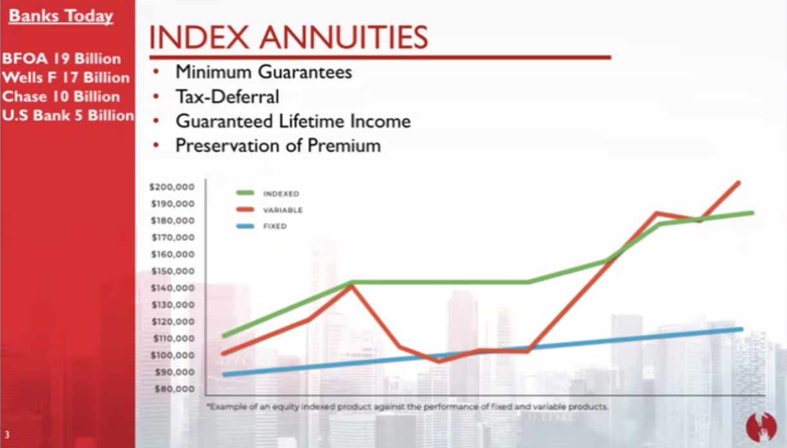
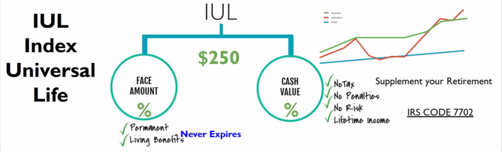
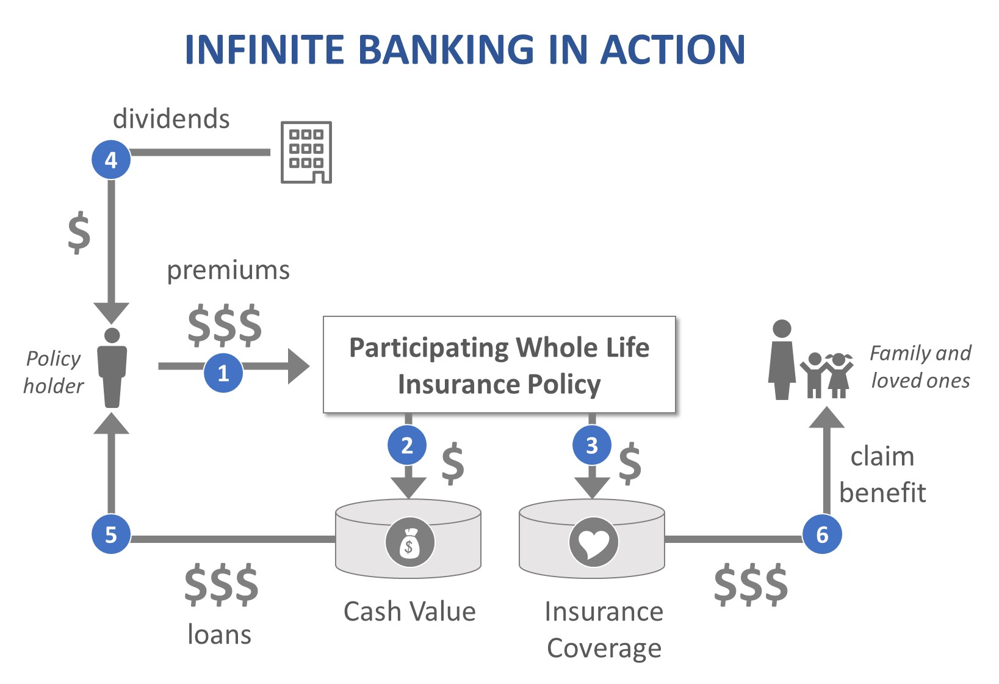

What is Indexed Universal Life (IUL) Insurance?
Indexed Universal Life (IUL) Insurance is a versatile and flexible type of permanent life insurance that not only provides a death benefit to your beneficiaries but also offers a unique opportunity to grow your wealth through the accumulation of cash value. Unlike traditional life insurance policies, IUL policies are linked to a specific market index, such as the S&P 500, allowing your cash value to potentially grow at a rate higher than fixed-rate policies, while still protecting you with a guaranteed minimum interest rate.
How Does an Indexed Universal Life Insurance Policy Work?
When you purchase an IUL policy, a portion of your premium payments is allocated to the policy’s cash value account. This account grows over time based on the performance of the selected market index. Here’s a step-by-step breakdown:
- Premium Payments: A portion of your premiums covers the cost of insurance, while the rest is added to your cash value account.
- Index-Linked Growth: Your cash value grows based on the performance of a specific market index. While you benefit from market upswings, the policy also includes a floor (usually 0%) that protects your cash value from market downturns.
- Policy Flexibility: IUL policies offer flexible premiums and death benefits, allowing you to adjust your policy to suit your financial situation over time.
- Tax Advantages: The growth in your cash value is tax-deferred, meaning you won’t pay taxes on the earnings until you withdraw them.
The Concept of Infinite Banking Using an IUL
Infinite Banking is a powerful financial strategy that allows you to leverage the cash value of your IUL policy as a personal bank. By borrowing against the accumulated cash value in your IUL, you can finance significant expenses such as purchasing a home, funding a business, or investing in other opportunities—all while your cash value continues to grow. Here’s how it works:
- Borrowing: You take a loan against your IUL policy’s cash value at a low-interest rate, which is generally lower than traditional bank loans.
- Continued Growth: Even as you borrow against it, your cash value continues to grow, benefiting from the index-linked interest.
- Loan Repayment: As you repay the loan with interest, the money goes back into your policy, further enhancing its growth potential.
- Tax-Free Access: The loans you take from your policy are generally tax-free, providing a cost-effective way to access funds.
Average Costs and Growth Potential of an IUL

The cost of an IUL policy varies based on several factors, including age, health, and the desired death benefit amount. On average, monthly premiums for an IUL policy can range from $100 to $1,000 or more. Here’s what you can expect:
- Premiums: The premiums are flexible, allowing you to increase or decrease payments depending on your financial situation.
- Cash Value Growth: Historical data shows that the cash value in an IUL policy can grow at an average annual rate of 4% to 8%, depending on the performance of the selected index and the policy structure.
- Cap and Floor Rates: IUL policies typically have a cap rate (maximum growth rate) and a floor rate (minimum growth rate) to protect your investment. For example, if the market performs well, your cash value might grow at a rate capped at 10%, while if the market underperforms, your policy might still guarantee a minimum growth rate of 0%.
Rolling Over Your 401(k) into an IUL

Rolling over your 401(k) or other retirement accounts into an IUL policy can be a strategic move to diversify your retirement savings while securing life insurance coverage. Here’s how the process works:
- Consult a Financial Advisor: It’s essential to consult with a financial advisor to understand the tax implications and ensure that rolling over your 401(k) aligns with your retirement goals.
- Transfer Funds: You can transfer a portion or all of your 401(k) funds into an IUL policy. This allows you to benefit from the tax-deferred growth of the cash value in the policy.
- Continued Growth: The cash value in your IUL will continue to grow based on the performance of the selected index, providing you with both retirement savings and life insurance protection.
- Flexible Access: You’ll have the flexibility to access your cash value during retirement, either as a source of income or to cover unexpected expenses.
Contact Us to Learn More
If you're interested in learning more about how an IUL can benefit you, fill out the form below or reach out directly.